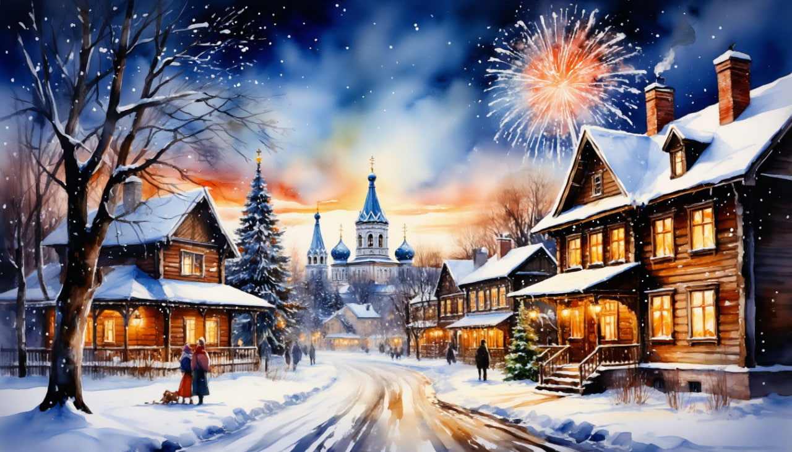

Рождество на белокаменном кольце | Владимир - Суздаль - Юрьев-Польский - Переславль-Залесский

Даты тура: с 5 января 2026 года (пн) по 7 января 2026 года (ср)
Стоимость тура:
- 24 800 р. - взрослый
- 24 500 р. - пенсионеры/школьники
- 29 800 р. - одноместное размещение
Программа тура:
1 день: Владимир + Боголюбово
- 06-00- выезд из Костромы от ТРЦ "РИО"
- Прибытие во Владимир.
- Завтрак.
- Обзорная экскурсия по Владимиру с внешним осмотром:
- - Успенского собора — уникального памятника древнерусской истории и искусства, включённого в Список Всемирного наследия ЮНЕСКО. Успенский собор представляет собой редчайшее сочетание архитектуры, настенных росписей, иконописи, декоративно-прикладного искусства XII-XIX веков.
- - Дмитриевского собора — одного из самых выразительных памятников русского средневековья, построенного в 1190-е гг. как дворцовый храм великого владимирского князя Всеволода Большое Гнездо. В 1992 году Дмитриевский собор вошёл в Список Всемирного наследия ЮНЕСКО.
- - Памятника Владимиру Святому - князю-отцу города;
- - Золотых ворот – редкого памятника военного зодчества XII века.
- Переезд в Боголюбово (Владимир → Боголюбово: 10 км).
- В ходе экскурсии запланировано:
- - Посещение Свято-Боголюбского монастыря, занимающего территорию дворца-замка Андрея Боголюбского — единственного гражданского здания домонгольской Руси, дошедшего до нашего времени хотя бы частично.
- - Осмотр Церкви Покрова на Нерли – поэмы из камня. Посреди заливного луга, при впадении реки Нерли в Клязьму, красуется белокаменная церковь Покрова 1165 года постройки - одно из самых лирических творений древнерусских зодчих.
- Возвращение во Владимир. Размещение в отеле.
- Свободное время.
2 день: Суздаль + Кидекша
- Завтрак.
- Отправление в Кидекшу (Владимир → Кидекша: 40 км).
- Экскурсия по древней Кидекше — некогда резиденции князя Юрия Долгорукого. Каменный свидетель того далёкого времени (XII век) сохранился здесь до сих пор: храм Бориса и Глеба — древнейший из белокаменных во всей России! По преданию, в этом месте случилась встреча двух святых братьев – князей Бориса Ростовского и Глеба Муромского, ехавших по зову отца, князя Владимира Красное Солнышко.
- Отправление на обзорную экскурсию по Суздалю (Кидекша → Суздаль: 5 км).
- Суздаль — город-музей, где сохранилось свыше 100 памятников русского зодчества XIII-XIX веков. На территории Кремля — Рождественский собор, Архиерейские палаты. В центре и на окраинах — ансамбли монастырей: Спасо-Евфимиев, Ризположенский, Покровский, Александровский.
- В ходе экскурсии мы посетим самую интересную и древнейшую часть города — Суздальский кремль — ядро Суздаля, археологически существующее с X века, а по летописям — с 1024 года.
- Обед.
- Свободное время в городе, которое можно посвятить многочисленным музеям Суздаля, неспешным прогулкам, покупке сувениров и дегустации сбитня.
- ИЛИ
- Участие в программе «Русская изба в Нескучном музее» (за доп. плату)* — интерактивной экскурсии для взрослых и детей, наполненной юмором и позитивом.
- Хозяйка избы расскажет о жизни крестьянской семьи, старинных предметах быта, обычаях и традициях. Все экспонаты можно не только рассмотреть, но и использовать по назначению – печь растопить, воды наносить, кашу наварить, постирать-погладить. В завершение программы нас ждёт небольшой мастер-класс — изготовим сувенир на память. А после у всех желающих будет возможность сфотографироваться в русских народных костюмах в интерьере избы с печкой!
- Отправление во Владимир (Суздаль → Владимир: 40 км).
- Свободное время.
3 день: Юрьев-Польский + Переславль-Залесский
- Завтрак. Освобождение номеров
- Отправление в Юрьев-Польский (Владимир → Юрьев-Польский: 70 км).
- Обзорная экскурсия по городу с осмотром «кружевного» Георгиевского собора.
- Юрьев-Польский всего на 5 лет младше Москвы! Он возник на перекрёстке торговых путей, которые соединяли Владимир, Ростов Великий, Переславль-Залесский и Суздаль, что пророчило городу богатство и процветание. Однако история распорядилась по-другому — с возвышением Москвы Юрьев-Польский утратил своё значение, но не своё очарование!
- В наши дни Юрьев-Польский привлекает многочисленных любителей русской глубинки. Большинство путешественников приезжает сюда ради одного из лучших памятников домонгольского зодчества — Георгиевского собора. Возведённый в XIII веке храм почти целиком покрыт белокаменной резьбой. Среди изображений можно увидеть святых, ангелов, всадников, кентавров и... даже слона! Считается, что нашедшему фигуру слона будет сопутствовать удача.
- Переезд в Переславль (Юрьев-Польский → Переславль-Залесский: 70 км) — старинный город, история которого корнями уходит в середину XII века.
- Но прежде — обед.
- Переславль был основан в 1152 году на берегу Плещеева озера князем Юрием Долгоруким как укреплённый пункт на границе Ростово-Суздальского княжества. Именно здесь родился и вырос князь Александр Невский. На Плещеевом озере в конце XVII века юный Пётр I создал свою «потешную флотилию», которая положила начало российскому военному флоту.
- По всей территории города разбросаны старинные церкви и соборы, однако главная достопримечательность (по крайней мере в рамках нашего маршрута) находится за опоясывающими самое сердце Переславля земляными валами XII века. Судьба белокаменного Спасо-Преображенского Собора связана сразу с несколькими важнейшими именами в истории Руси. Уверены, Вы помните их с уроков истории. Заложен Собор Юрием Долгоруким в 1152 году. Достроен при Андрее Боголюбском в 1157 году. А в 1221 здесь был крещён родившийся в Переславле Александр Невский. Этот и другие храмы, а также прочие достопримечательности Переславля мы увидим в ходе экскурсии «Город Александра Невского».
- Свободное время.
- Сбор группы. Отправление домой.
- Прибытие домой поздно вечером
В стоимость тура входит:
- - проживание в гостинице*
- * отель "Заря" (Реестровый адрес: С332024014534)
- - питание по программе
- - услуги гида-экскурсовода
- - экскурсионная программа
- - автобусное обслуживание по программе тура
Дополнительно оплачиваются (по желанию):
- - Программа "Русская изба в Нескучном музее". 1 300 руб. (при покупке заранее), 1 500 руб. (при покупке на месте)
- Для бронирования необходимы данные паспорта РФ и свидетельства о рождении, если с вами путешествуют дети
- Предоплата – 50% от стоимости тура. Остаток за 30 дней до даты выезда.
- Любой тур можно оформить не выходя из дома. Подробнее: Тут
Стоимость тура не зафиксированы и могут быть изменены в большую или меньшую сторону в зависимости от уровня спроса в любой момент.
Время начала экскурсий и их порядок указано ориентировочно.
Фирма-исполнитель оставляет за собой право замены экскурсий без уменьшения общего объема экскурсионной программы.
По вопросам бронирования обращайтесь: